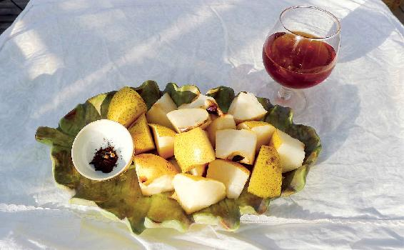
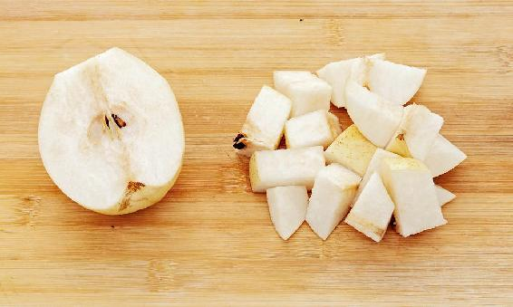
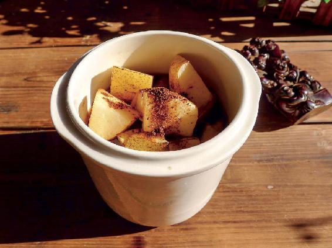
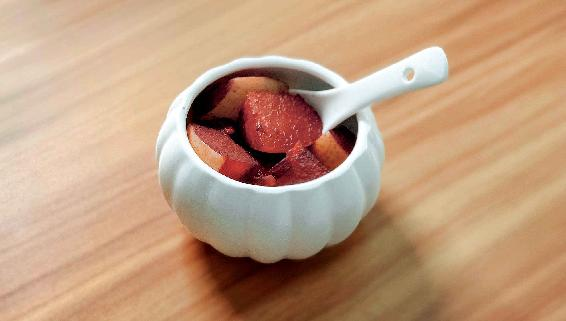
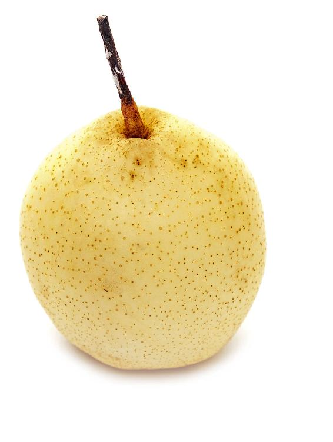
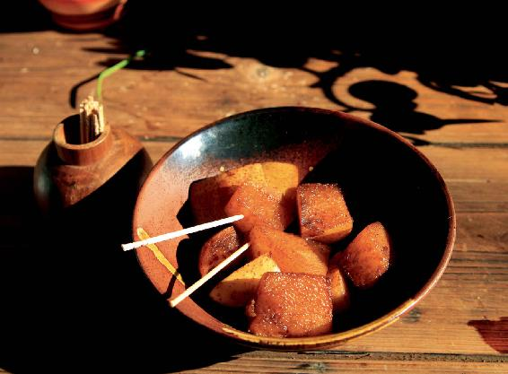

白露节气就要到了，我们应该提前准备什么食方呢？那就是红酒炖梨。
红酒炖梨

原料：梨、红酒、丁香粉。

做法：
1.先用面粉水把梨泡上15分钟，之后搓洗干净，然后连皮一起切成小块，梨核不要扔掉，也切成小块。

2.把切好的梨块放入锅内，撒上丁香粉，再倒入少量的红酒（红酒的量不要多，只要能淹到梨块大约一半的位置就可以了），然后开小火炖。炖的时候不要盖锅盖，要敞开炖，好让酒精的味道尽量散发出去。等炖到梨块变红，酒汁已经渗透进去，锅里还剩一点点汁，冒出大泡的时候，就可以马上关火起锅了。
允斌叮嘱：
1.不要炖得太干，也不要在还有很多汁的时候就关火，要恰到好处，因为我们不是喝梨汤，而是吃梨块。
2.不要用平时炒菜用的生铁锅来炖梨，这样容易起氧化反应，用普通的不锈钢汤锅来炖是最好的。

用什么样的梨都可以。新上市的秋梨，不管是哪一个品种都可以用。

红酒用最普通的就可以了。因为红酒是用来炖梨的，煮过之后的红酒，就是再贵，它的风味也变了。
我特别推荐用中国古法酿制的葡萄果酒来炖梨，也就是很多朋友喜欢在家里自酿的那种葡萄果酒。这种葡萄果酒，因为没有被橡木桶储存过，所以它不会有很重的涩味——单宁的味道。用这样的红酒炖出来的梨，味道会比较好。
有些朋友曾经给我反馈过，说他用国外进口的、特别好的红酒炖梨以后，并不太好吃。
其实，这是因为这种红酒年份比较久，而且储存的时候用的都是橡木桶，橡木的味道比较重。
这种红酒就适合单独来品尝，用来炖梨就太浪费了，效果也不好。而用自家酿制的葡萄果酒来炖，味道反而比买来的有年份的红酒要好。
丁香是一味中药，去药店就可以买到。但它同时又是一种调料，平时炖肉的时候会经常用到它，您在超市也可以买到它。
最好是买丁香粉，这样炖梨比较方便，如果没有，那就买整个的丁香，每次炖梨用两三个。
丁香有护胃的作用，而梨是比较寒凉的。加上丁香，就能平衡梨的寒性，保护我们的脾胃。
只有一种人可以不用放丁香，那就是有咽喉肿痛的朋友。
读者评论：红酒炖梨真的很好吃
yiyi♥情寒秋：第一次做红酒炖梨时，没有丁香粉，酒也倒多了，做出来味道挺涩，不大好吃。第二次买了丁香粉，用的雪梨，红酒也是最普通的11度的葡萄酒，出锅后又加了点蜂蜜，真的很好吃！
夏天结束，秋天开始的时候，有时候会突然之间一夜秋风起，气温下降，遇到这种时候，一些朋友，特别是脾胃不好的朋友会突然之间嗓子疼痛起来，这其实是内热外寒造成的结果。
如果嗓子正在肿痛发作的急性期，当然是可以用吃牛蒡来解决的，之后，您就可以吃红酒炖梨来清除一下肺热，滋润咽喉了。

普通的人群，要等到白露节气的时候，才可以吃这道食方。而平时肺热比较重或者是经常咽喉肿痛的人群，白露节气的前几天，就可以吃这道食方了。